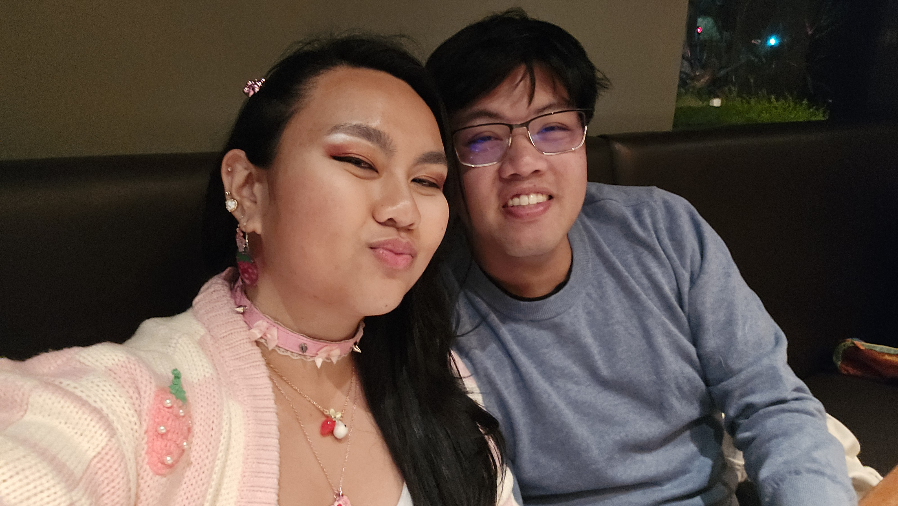

10 Months Later...
No matter the ups and downs, the highs and lows, or even the loops that we will have to face. No matter the challenges that will come our way, I know we have the strength and love to overcome them, because you showed me how to love again. My love, thank you for staying patient as I continue my healing journey, and I am also grateful for you being on this journey with me. Through our time spent together, I have seen many sides of you-- a dutiful son, a caring friend, a supportive brother (to friends and biological :b), a thoughtful nephew, a fun and loving uncle, and lastly, a loving partner. You have introduced me to new things I never thought I would love, while also allowing me to be authentically myself and unlocking parts of me I have forgotten. You helped me love parts of me that I've always hated, and you always remind me of my strengths on times when I never see it. No matter what happens, we'll navigate the hyperspace lanes together (get it? :b). I love you so much, my love 💞✨
